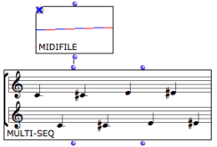

Polyphonic Objects
The Multi-Seq Object
| The multi-seq object allows to "superimpose" several chord-seqs . |
Multi-seqs have two inputs and outputs.
- The first input – self – takes chord-seqs or midifiles .The second input takes a list of chord-seqs .
- The first output returns the self of the multi-seq . The second output returns a list of chord-seqs .
To convert a midifile into a multi-seq :
The midifile is expressed as a standard musical score, which can be accessed and modified via its editor. You will have to select a midi file when the object is evaluated. Lock the box in order not to have to choose a file again. |  |
To convert a midifile and a chord-seq into a multi-seq :
convert the midifile into a multi-seq ,
connect the second output of the multi-seq , and the "self" output or the chord-seq to list .
If the midifile has more than one voice, use flat to get a single level list of chord-seqs.
Connect list or flat to the second input of the multi-seq.

You can possibly convert the resulting multi-seq into a midifile with a simple connection and evaluation.
The Poly Object
| The poly object allows to "superimpose" several voices . |
The poly object has two inputs and outputs :
- The first input – self – takes polys or midi files . The second input take a list of voices .
- The first output returns the self of the poly . The second output returns a list of voices .
To create a poly out of a series of voices :
|  |